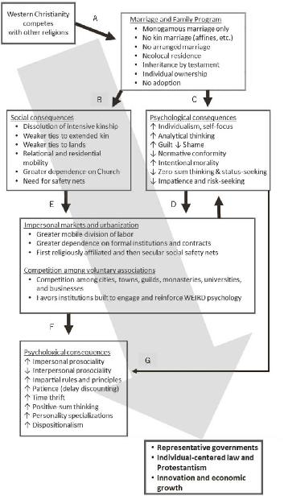

Humans are an intensely cultural species. For over a million years, the products of cumulative cultural evolution—our complex technologies, languages, and institutions—have driven our genetic evolution, shaping not only our digestive systems, teeth, feet, and shoulders but also our brains and psychology. The centrality of cultural change meant that, generation after generation, young learners had to adapt and calibrate their minds and bodies to an ever-shifting landscape of sharing norms, food taboos, gender roles, technical demands (e.g., projectile weapons and underwater foraging), and grammatical conventions. At the same time, cultural evolution has favored an arsenal of mind hacks, including rituals, socialization practices (e.g., bedtime stories), and games, that mold people’s psychology in ways that allow them to more effectively navigate their culturally-constructed worlds. The consequence of this culture-gene coevolutionary process is that to understand people’s psychology we have to consider not only our genetic inheritance but also how our minds have adapted ontogenetically and culturally to the local technologies and institutions—present or even a few generations past. Thus, we should expect a rich array of diverse cultural psychologies to go along with disparate societies. The cultural evolution of psychology is the dark matter that flows behind the scenes throughout history.
To build up an understanding of the interaction between institutions and psychology, I began by drilling down to focus on our species’ oldest and most fundamental institutions—those related to kinship and religion. Given their anchoring in our species’ evolved psychology, it’s not surprising that kin-based institutions culturally evolved as the primary way that mobile hunter-gatherers organize themselves and stretch out their cooperative networks. However, after the origins of sedentary agriculture, the need to control territory in the face of fierce intergroup competition drove the intensification of kin-based institutions, leading to the norm clusters that organize clans, cousin marriage, corporate ownership, patrilocal residence, segmentary lineages, and ancestor worship. As societies scaled up, the most successful political institutions remained heavily entwined with kinship. Even after the emergence of premodern states, with their military forces and tax-collecting bureaucracies, kin-based institutions still dominated life among both the elite and the lower strata. All of this means that some of the contemporary psychological variation we observe can be traced, through a variety of pathways, back to the ecological, climatic, and biogeographic factors that influenced the emergence of kin-based institutions and states.
Alongside kinship, both religions and rituals have also been culturally evolving over eons to harness aspects of our species’ evolved psychology in ways that expand the social sphere and foster cooperation in larger groups. However, the emergence of diverse universalizing religions with the development of cosmopolitan empires provided new opportunities for cultural evolution to “experiment with” a variety of divine prescriptions and prohibitions related to marriage and the family. Some universalizing faiths endorsed marriage to close relatives (Zoroastrianism), while other faiths forbade previously common unions, such as those between cousins or affines. Similarly, some religions permitted men to marry as many wives as they wanted to (or could), while others limited them to only four and required equality among the wives (Islam). By the outset of the first millennia of the Common Era, the Roman Empire was a bubbling cauldron of religious competition that included the old Roman state religion, Judaism, Zoroastrianism, Mithraism, a potpourri of Christian faiths, and a panoply of local religions. From this cauldron, one strain of Christianity stumbled upon a peculiar set of taboos, prohibitions, and prescriptions regarding marriage and the family that eventually crystallized into the Church’s Marriage and Family Program.
These prohibitions and prescriptions, which were infused into Christianizing populations under the Western Church over many centuries (arrow A in Figure 14.1), altered people’s social lives (arrow B) and psychology (arrow C) by demolishing intensive kin-based organizations. These changes would have favored a psychology that was more individualistic, analytically-oriented, guilt-ridden, and intention-focused (in judging others) but less bound by tradition, elder authority, and general conformity. The elimination of polygynous marriage and the tightening of constraints on male sexuality may also have inhibited male status-seeking and competition, which would have suppressed zero-sum thinking, impatience, and risk-seeking.
The social and psychological changes driven by the breakdown of intensive kinship opened the door to rising urbanization, expanding impersonal markets (arrows D and E), and competing voluntary associations like charter towns, guilds, and universities. By facilitating and enforcing impersonal interactions in various ways, urban centers and commercial markets further stimulated impersonal prosociality and impartial rule-following while incentivizing personal attributes like patience, positive-sum thinking, self-regulation, and time thrift (arrows F and G). By producing a growing division of labor, within which an expanding class of individuals could select their occupations and social niches, these new social environments may have fostered more differentiated personality profiles—expanding eventually into the WEIRD-5—and strengthened people’s inclinations to think in dispositional ways about other individuals and groups.
The quiet fermentation of these psychological and social changes influenced the formation of governments, laws, religious faiths, and economic institutions in the latter half of the Middle Ages and beyond. Creating laws, for example, that focus on individuals and their properties (“rights”) just makes sense if one lives in communities with weak family ties, substantial relational mobility, and a developing individualistic psychology that parses the world in dispositional ways (“she’s trustworthy”). By contrast, if one lives in a community where relational ties are central and people are primarily judged by their social and family connections, building law and government around individual rights doesn’t seem like common sense. It doesn’t “fit” people’s psychological inclinations.

In the last chapter, I examined how cultural evolution—in the wake of the transformation of European kinship and rising urbanization—expanded Christendom’s collective brain and altered key aspects of people’s psychology in ways that would have catalyzed innovation, suppressed fertility, and propelled economic growth. We saw how these ongoing social and psychological changes gradually opened the flow of ideas, beliefs, practices, and techniques within a sprawling network of interconnected minds, each of which was motivated to produce new insights and challenge old assumptions. This occurred in myriad ways, including through the diffusion of literacy (due to Protestantism), the proliferation of scientific societies, and the accelerating flow of artisans, scholars, and merchants through far-flung European cities and towns. This expanding collective brain sparked the Enlightenment, drove the Industrial Revolution, and continues to propel economic growth around the globe.
Now, with this summary in mind, let’s return to the three core questions that I posed back in Chapter 1:
Answer: To explain psychological variation broadly, we need to examine how history has unfolded in different ways in different places and consider the coevolution of people’s minds with different institutions, technologies, and languages. Targeting the psychological patterns highlighted in Table 1.1, I focused on the evolution of institutions related to (1) intensive kinship, (2) impersonal markets and urbanization, (3) competition among voluntary associations, and (4) complex divisions of labor with substantial individual mobility.
Answer: The sect of Christianity that evolved into the Roman Catholic Church stumbled onto a collection of marriage and family policies that demolished Europe’s intensive kin-based institutions. This grassroots transformation of social life propelled these populations down a previously inaccessible pathway of societal evolution and opened the door to the rise of voluntary associations, impersonal markets, free cities, and so on.
Answer: By the High Middle Ages, the social and psychological shifts induced by the Church had made some European communities susceptible to notions of individual rights, personal accountability, abstract principles, universal laws, and the centrality of mental states. This fertilized the psychological soil for the growth of representative governments, constitutional legitimacy, and individualistic religious faiths as well as the rise of Western law and science. These changes accelerated the ongoing social and psychological transformations that energized innovation and economic growth.
By 1000 CE, at the beginning of Europe’s transformation, the world was already highly economically unequal and likely quite psychologically diverse. Propelled by the early development of food production, the most prosperous and urbanized societies were all in Eurasia—in the Middle East, India, and China. Highlighting this pattern in his Pulitzer Prize–winning book Guns, Germs, and Steel, Jared Diamond argues that Eurasia, and particularly the Middle East, got a big head start in the formation of complex societies because these regions ended up with many of the world’s most productive crops and best mammalian candidates for domestication. Eurasia got the wild ancestors of wheat, barley, millet, oats, and rice, along with cows, horses, pigs, goats, sheep, water buffaloes, and camels. Meanwhile, the Americas ended up with few wild plants or animals that were both easy to domesticate and productive. Corn, the major staple in the New World, required numerous genetic changes from its wild version to yield a productive crop—so it was a long road. For domesticated animals, the Americas ended up with llamas, guinea pigs, and turkeys—which gave them no general-purpose work animals like oxen, horses, water buffaloes, or donkeys to pull plows, carry heavy burdens, and crank mills. In Australia, the candidate crops and domesticated animals were even fewer than in the Americas.1
Accentuating these inequalities in fauna and flora, Eurasia’s complex societies also developed more rapidly due to an east-west geographic orientation. This fostered the rapid development and diffusion of new crops, agricultural knowledge, domesticated animals, and technological know-how. As discussed in Chapter 3, this geographic orientation would have further fueled the intensive competition among societies that drives up political and economic complexity.
Taken together, the elements of Diamond’s elegant argument nicely explain why we’d expect the largest and most powerful societies to emerge first in Eurasia, as opposed to the Americas, Australia, Africa, New Guinea, or Oceania, and it even points to where we’d expect to find them: the “lucky latitudes” that run through China, India, the Middle East, and the Mediterranean.2
Diamond’s argument explains much of the global-level inequality that we observe in the world of 1000 CE. Subsequent analyses, further testing his ideas, have confirmed that biogeographic factors like the availability of domesticates, irrigation potential, and the orientation of continental axes are associated with the development of intensive agriculture, which in turn midwifed the early formation of states. With their head starts on people in other regions, these populations subsequently developed larger societies, political hierarchies, complex economies, urban centers, and sophisticated technologies.3
However, the strong positive relationship between these head starts and later economic prosperity weakens after 1200 or so, as European populations that experienced neither precocious states nor early agriculture took off economically. In fact, the leading economies during this takeoff were in some of the places where agriculture and states arrived relatively late within the Eurasian context: England, Scotland, and the Netherlands. In the last two centuries, these regions, along with British-descent societies like the United States, saw economic growth the likes of which had never been seen before in human history (Figure 13.1).4
My account picks up the story of global inequality where Diamond’s explanation falls off—circa 1000—and places the coevolution of institutions and psychology at center stage. In a deep historical sense, Diamond’s approach effectively accounts for why, at the opening of the second millennium, Said ibn Ahmad could see his civilization, and a few others, as superior to both the northern and southern “barbarians.” Ancient Middle Eastern and Mediterranean societies, with origins that trace back to the earliest agriculture on earth, had bequeathed an immense cultural inheritance to Said’s Islamic world that sustained its dominance well into the 16th century. Diamond’s biogeographic approach, however, doesn’t help us account for why the Industrial Revolution began in England, or why the Scottish Enlightenment first began to glow in Edinburgh and Glasgow. Only by considering the social and psychological changes induced by the Church’s reorganization of the family can we understand Europe’s peculiar pathway and the resulting patterns of global inequality that have developed in the last few centuries.5
However, recognizing the cultural and psychological impact created by a long history of societal complexity helps us to understand why some societies, like Japan, South Korea, and China, have been able to adapt relatively rapidly to the economic configurations and global opportunities created by WEIRD societies. Two factors are likely important. First, these societies had all experienced long histories of agriculture and state-level governments that had fostered the evolution of cultural values, customs, and norms encouraging formal education, industriousness, and a willingness to defer gratification. These are, in a sense, preexisting cultural adaptations that happened to dovetail nicely with the new institutions acquired from WEIRD societies. Second, their more powerful top-down orientations permitted these societies to rapidly adopt and implement key kin-based institutions copied from WEIRD societies. Japan, for example, began copying WEIRD civil institutions in the 1880s during the Meiji Restoration, including prohibitions on polygynous marriage. Similarly, as noted earlier, the Chinese Communist government initiated a program in the 1950s to abolish clans, polygyny, arranged marriages, unions between close relatives, and purely patrilineal inheritance (i.e., daughters had to receive an equal inheritance). In South Korea, the government passed a Western-style civil code in 1957 that required the consent of both grooms and brides to marry, prohibited polygynous marriage, and forbade marriage to relatives out to third cousins, through both blood and marriage. Since then, a variety of amendments have shifted South Korean society even further away from patriarchal intensive kinship. In 1991, inheritance finally became bilateral, so sons and daughters now inherit equally. In all three of these Asian societies, the European Marriage Pattern that had come to dominate medieval Europe under the Catholic Church was implemented rapidly from the top down.6
The big difference here, compared to preindustrial Europe, is that these 19th- and 20th-century Asian societies could also copy and adapt working versions of representative governments, Western legal codes, universities, scientific research programs, and modern business organizations in ways that permitted them to plug directly into the global economy. Modern formal institutions are now to a degree available “off the shelf,” though their performance depends on the cultural psychology of the populace.7
My approach may also illuminate why populations with particularly long histories of agriculture, like those in Egypt, Iran, and Iraq, haven’t fully integrated with the modern formal political and economic institutions that first arose in Europe. These societies have maintained quite intensive forms of kinship, probably for religious reasons. Islam, due largely to its divinely sanctioned inheritance customs (daughters must inherit half of what sons inherit), likely drove the diffusion of, or at least helped sustain, an otherwise rare endogamous marriage custom in which daughters marry their father’s brother’s sons. Specifically, as agricultural and pastoral societies adopted Islam, the need to sustain family landholdings against the possible loss of land each time a daughter married out (and into another clan) favors marrying within clans to avoid the continual depletion of wealth—land is the primary form of wealth in many such societies. This custom encourages particularly intensive forms of kinship, which as I’ve shown favor certain ways of thinking and feeling along with particular formal institutions (e.g., not democracy).8
Many WEIRD people have a set of folk beliefs that lead them to assume that any observed psychological differences among populations are due to economic differences—differences in people’s income, wealth, and material security. There is some truth to this intuition. Psychological shifts can emerge facultatively (on the fly) when individuals face sudden scarcity; or, changes may develop when infants and children psychologically and physiologically calibrate, while growing up, to more plentiful or less uncertain environments—I noted such effects when examining the influence of social safety nets on innovation (Chapter 13). They can also arise as people adaptively learn the most successful strategies, motivations, and worldviews from those in their communities or social networks—different psychological inclinations, approaches, and abilities will be more or less successful in more impoverished, constrained, or uncertain situations.9
However, there’s little reason to suspect that rising wealth tindered the original sparks that ignited the modern world. In European Christendom, rising income and material security were, at least at first, a consequence—not a cause—of changing kin-based institutions and shifting psychological patterns. To see this, consider four points. First, the ordering of historical changes suggests that wealth, income, and material security (stability)—hereinafter glossed as “affluence”—can’t be the first movers, since they follow both the institutional and psychological patterns I’ve outlined. Specifically, based on court records, kinship terminologies, Church histories, and other data sources, changes in European kinship long preceded rising affluence. Similarly, judging from literary sources, personal mobility, and legal writings, the first psychological shifts in individualism and independence arose before any substantial increases in affluence. Second, as I’ve frequently noted, many of the analyses of psychological variation presented throughout this book statistically hold constant the impacts of wealth, income, and even people’s subjective experience of material security. Sometimes these affluence measures do show some independent relationships to people’s psychological traits, but often they don’t show any effects at all. When the effects of affluence do appear, they are typically small compared to the factors I’ve emphasized: religion, kin-based organizations, impersonal markets, and intergroup competition.10
To see this more clearly, let’s consider a third point: the predicted patterns of psychological variation appear in both elite and poor populations. In all stratified societies, the elite are well-fed, rich, and usually feel secure (at least relative to the poor)—so, they all should show the psychological effects of affluence. Concretely, think of the UN diplomats, corporate managers, or high-level executives studied in Chapter 6. All are materially comfortable, yet their propensity for (1) impersonal honesty (parking illegally, see Figure 6.11), (2) universal morality (lying in court to protect their reckless buddies, see Figure 6.7), and (3) nepotism (hiring relatives into executive positions) varies immensely and can be explained by our measures of kinship intensity and Church exposure. In fact, we saw just as much psychological variation among these well-off elites as we did in both the nationally representative surveys and undergraduate samples. This suggests that affluence plays little role in shaping these global psychological differences.11
These patterns are further underlined by considering who drove the Industrial Revolution. The elites of Early Modern Europe held most of the wealth. Wealth buys armies, and armies buy security. If it was affluence that drove a WEIRDer psychology, then it should have been Europe’s aristocrats who fueled the entrepreneurial engines of the Industrial Revolution. Instead, as we have seen, it was the urbanizing individualists, artisans, and clergy in the middle class who invested in the first joint stock companies and invented the printing press, steam engine, and spinning mule. The elites, by contrast, just got themselves repeatedly into debt by spending on personal extravagance instead of investing their wealth and saving for the long run. This is precisely the opposite of what an affluence-driven approach predicts.12
At the other end of the affluence spectrum, we again see substantial psychological variation. Recall the differences in impersonal prosociality observed in and among the hunter-gatherers, herders, and subsistence farmers from around the world. Many of these populations live on less than two dollars per day. Famines, hurricanes, droughts, injuries, and diseases are real threats to everyone’s life and family. Yet not only did researchers uncover substantial psychological variation among these populations, but the most important factors that explained people’s motivations for treating strangers fairly related to market integration and religion. These relationships remained strong even after we statistically held constant the small and inconsistent influences of affluence.13
This brings us to our fourth point. While some researchers have sought to argue that rising wealth and greater material security can directly shift some aspects of people’s psychology—such as patience or trust—many aspects of psychology that I’ve described here have never been associated with affluence. For example, no one has explained or shown that greater wealth causes people to think more analytically, emphasize intentions in making moral judgments, or experience guilt over shame.
The bottom line is that rising wealth, income, and material security are part of the story and likely do have some effects; but, they were neither the initial sparks nor the most important drivers of psychological change over the last 15 centuries.
To explain the origins of WEIRD psychology and the Industrial Revolution, I’ve argued that people’s psychology shifted through adaptive cultural and developmental processes but not substantially through natural selection acting on genes. This is a good bet, given what we now know about how cultural learning, institutions, rituals, and technologies shape our psychology, brains (e.g., literacy), and hormones (e.g., monogamous marriage) without tinkering with our genes.14
It is possible, however, that the cultural and economic developments I’ve described also created selection pressures on genes favoring some of the same psychological differences. It’s important to confront this possibility head-on, for a couple of reasons. First, as noted above, the products of cultural evolution have shaped our species’ genetic evolution well back into the Stone Age. And in more recent millennia, the agricultural revolution and animal domestication have further altered the human genome in myriad ways, including favoring genes that permit people to more efficiently process both milk and alcohol. So, the notion that culture can influence our genome is now well established. Second, both our evolved tribal psychology and WEIRD inclinations toward dispositional explanations of behavior predispose us to see innate or essential differences where none exist. This explanatory bias has led some researchers to assume that any observed or inferred psychological differences among populations are due to genetic differences. The durability of this bias makes it all the more important to be crystal clear about the evidence.15
Overall, the many lines of research explored in this book suggest that cultural processes have dominated the formation of the psychological diversity that is apparent around the globe as well as within Europe, China, and India. Although natural selection acting on genes may have sluggishly responded to the world created by the religious beliefs, institutions, and economic changes I’ve described, there are a number of reasons to think that genes probably contribute little to contemporary variation. And, if they do, they may be pushing in the opposite direction to that typically presumed.
At the broadest level, cultural evolutionary processes are fast and powerful relative to natural selection acting on genes. This means that over periods of centuries (as is the case here), cultural adaptation will tend to dominate genetic adaptation, though in the longer run—over many millennia—genetic evolution can have larger effects and, in many cases, push things further than culture alone could. Moreover, by adaptively “fitting” people—psychologically—to their institutional environments, cultural evolution will often (but not always) deplete the strength of natural selection acting to address the same adaptive challenges. As I mentioned, the classic example of this is the evolution of genetic variants over thousands of years that permit adults to break down the lactose in milk. The selection for these genetic variants began with the cultural diffusion of animal herding (cows, goats, etc.). Both genetic and cultural evolution responded. In some populations, people developed cheese- and yogurt-making techniques that allowed adults to access the nutritional bounty in milk without possessing any special genes. Only in other populations, where those practices never evolved culturally, did genetic variants spread that permitted adults to process lactose.16
More recently, the power of cultural over genetic evolution can be strikingly seen in research on the genetic and cultural contributions to educational attainment during the 20th century. In European-descent populations, researchers have identified roughly 120 genes that are associated with schooling outcomes. Genes can potentially influence educational attainment in many ways, including by influencing people’s willingness to sit still, pay attention, use birth control, avoid drugs, and do homework, as well as by contributing to their raw cognitive abilities. Interestingly, studies in both the United States and Iceland reveal that natural selection has reduced the frequency of these genes, resulting in a drop of 1.5 months of total schooling per generation. That is, genes that make people less likely to continue their schooling have increased in frequency in these populations. This genetically induced push against schooling, however, was rolled over by cultural evolution, which was speeding in the opposite direction. Over the same period, culture drove up people’s educational attainment by 25.5 months (and IQ by 6 to 8 points) per generation. Over the entire 20th century, culture has raised Americans’ educational attainment by 9 to 11 years, while natural selection has lowered it by less than 8 months.17
Now, in the historical account I’ve developed, the adaptive processes created by both cultural and genetic evolution might have—in principle—been pushing in the same direction. As long as social and economic success remained positively linked to survival and reproduction, both genetic and cultural evolution would have favored a WEIRDer psychology. However, there are good reasons to suspect this was not the case and that natural selection faced tremendous headwinds compared to cultural evolution. Much of the institutional and psychological action emerged in the urbanizing areas of Europe, in the charter towns and free cities I’ve highlighted. This is where the residentially mobile individuals clustered, guilds sprouted, impersonal markets flourished, urban charters blossomed, and universities bore fruit.
Given this distribution, here’s the rub: urban areas in Europe were genetic death traps, a situation known as the “urban graveyard effect.” Before the modern era, European urban dwellers died from infectious diseases (and probably wars) much more frequently than their rural counterparts, and their life expectancy at birth was up to 50 percent lower. Any psychological or behavioral inclinations derived from genes that might have caused an individual to want to live in a city would have been selected against. For example, if some folks had a genetic predisposition to trust strangers or think analytically, and this attracted them to the opportunities of urban life, natural selection would have quickly snuffed out these genes, or at least lowered their frequencies.18
Instead, European cities and towns survived and grew only through a constant inflow of rural immigrants. To sustain their populations, this inflow was so large that at any given time 30 percent of the populace had to have been born elsewhere. To actually grow, say, by 10 percent per decade, towns and cities required an inflow of twice this. This graveyard effect, combined with a near-constant flux of immigrants from the hinterlands, makes it hard to imagine much of a role for genetic evolution in creating WEIRD psychology—if anything, natural selection would have been operating against a psychology adapted to dense populations, impersonal markets, individualism, specialized occupational niches, and anonymous interactions.19
I’ve also argued that some of the key cultural evolutionary action occurred in monastic houses, like those of the Cistercian Order. Of course, from natural selection’s point of view, monasteries are also genetic graveyards. Even if we assume that monastic vows of chastity were frequently violated (with women), monks were still having fewer children than they would have if they’d not joined this particular voluntary association.
Unlike natural selection acting on genes, the selective processes of cultural evolution would have been much less impacted by the graveyard effect. Most urban immigrants were young, single, and childless. They joined voluntary associations, like guilds, where they were enculturated and socialized by successful peers and prestigious elders. Once in, they could establish a firmer foothold by marrying into the native population. Those who died were readily replaced by eager new arrivals from rural areas who learned from the most successful survivors. Unlike genetic offspring, cultural learners don’t rely on acquiring anything from their genetic parents but instead can selectively draw their “cultural parents” from among the survivors who achieve prestige and prosperity.
Cities have survived and prospered because culture has been winning over genes. The cultural evolutionary processes I’ve described forged efficient governing institutions while threading together a vast collective brain that ultimately improved public health by creating innovations like vaccination, water treatment, sanitation, and germ theory. Only in the last century has the mortality component of the graveyard effect vanished, or at least gone into remission, and many cities are now healthier than the countryside. Urbanites, however, still have fewer children than their rural counterparts.
Overall, the urban graveyard effect suggests that, if anything, there may have been selection against any genes favorable to a WEIRDer psychology. Culture may have had to wrestle its way upstream against a slower and weaker genetic opponent.
Does it matter that individuals and populations vary in how they perceive, think, feel, reason, and make moral judgments? Does it matter that these differences were produced by cultural evolution and that this changing psychological landscape influenced the character of our governments, laws, religions, and commerce?
Indeed it does. This view changes our understanding of who we are and where our most cherished institutions, beliefs, and values came from. The much-heralded ideals of Western civilization, like human rights, liberty, representative democracy, and science, aren’t monuments to pure reason or logic, as so many assume. People didn’t suddenly become rational during the Enlightenment of the 17th and 18th centuries, and then invent the modern world. Instead, these institutions represent cumulative cultural products—born from a particular cultural psychology—that trace their origins back over centuries, through a cascade of causal chains involving wars, markets, and monks, to a peculiar package of incest taboos, marriage prohibitions, and family prescriptions (the MFP) that developed in a radical religious sect—Western Christianity. The Christian leaders who repeatedly beefed up, implemented, and enforced the MFP at ecumenical councils over centuries revealed no long-term instrumental vision for how they’d create a new kind of world, though they no doubt had some nonreligious motives in addition to a genuine desire to serve a powerful supernatural being who—they believed—was deeply concerned about people’s sex lives. Nevertheless, the unintended success of the MFP in restructuring medieval European populations directed societal evolution down a new pathway.
After 1500, European societies began expanding around the globe, often with devastating consequences, especially for those outside of Eurasia or from less complex societies. In the modern world, what we call “globalization” is merely the continuation of the processes I’ve described from Late Antiquity. Impersonal institutions like representative governments, universities, and social safety nets, which all evolved in Europe (before the Enlightenment), have been exported and transplanted into numerous populations. Often, especially in formerly non-state societies, the newly transplanted institutions created a misfit with people’s cultural psychology, leading to poorly functioning governments, economies, and civil societies. And then, all too often, this led to rising poverty, corruption, and malnutrition as well as to civil wars between clans, tribes, and ethnic groups. Many policy analysts can’t recognize these misfits because they implicitly assume psychological unity, or they figure that people’s psychology will rapidly shift to accommodate the new formal institutions. But, unless people’s kin-based institutions and religions are rewired from the grass roots, populations get stuck between “lower-level” institutions like clans or segmentary lineages, pushing them in one set of psychological directions, and “higher-level” institutions like democratic governments or impersonal organizations, pulling them in others: Am I loyal to my kinfolk over everything, or do I follow impersonal rules about impartial justice? Do I hire my brother-in-law or the best person for the job?
This approach helps us understand why “development” (i.e., the adoption of WEIRD institutions) has been slower and more agonizing in some parts of the world than in others. The more dependent a population was, or remains, on kin-based and related institutions, the more painful and difficult is the process of integrating with the impersonal institutions of politics, economics, and society that developed in Europe over the second millennium. Rising participation in these impersonal institutions often means that the webs of social relationships, which had once ensconced, bound, and protected people, gradually dissolve under the acid of urbanization, global markets, secular safety nets, and individualistic notions of success and security. Besides economic dislocation, people face the loss of meaning they derive from being a nexus in a broad network of relational connections that stretches both back in time to their ancestors and ahead to their descendants. The nature of “the self” transforms through this social and economic reorganization.
Of course, the process of European domination, colonialism, and now globalization is complex, and I’m not highlighting the very real and pervasive horrors of slavery, racism, plunder, and genocide. There are plenty of books on those subjects. Here, my point is that because human psychology adapts culturally, over generations, large-scale social transformations like those associated with globalization will necessarily create mismatches between people’s cultural psychology and new institutions or practices, thereby shocking their sense of meaning and personal identity. This can happen even in the absence of the aforementioned horrors and can continue long after they’ve ended.
Unfortunately, the social sciences and standard approaches to policy are poorly equipped to understand or deal with the institutional-psychological mismatches that arise from globalization. This is because, not only is little attention given to the psychological variation among populations, but there’s almost no effort to explain how these differences arise. Psychologists, for example, largely assume (often implicitly) that they are studying the genetically evolved hardware of a computational machine, akin to a desktop computer, and leave it to the anthropologists and sociologists to describe the software—the cultural content—that is downloaded into our psychological hardware. It turns out, however, that our brains and cognition evolved genetically to be self-programmable to a substantial degree and stand primed from birth to adapt their computational processing to the social, economic, and ecological environments they face. This means you can’t truly understand psychology without considering how the minds of populations have been shaped by cultural evolution. As we’ve seen in many studies, but most strikingly in those involving the children of immigrants to places like the United States and Europe, people’s psychology is influenced not only by the communities they grew up in but also by the ghosts of past institutions—by the worlds faced by their ancestors around which rich systems of beliefs, customs, rituals, and identities were built. The result is that textbooks that now purport to be about “Psychology” or “Social Psychology” need to be retitled something like “The Cultural Psychology of Late 20th-Century Americans.” Tellingly, the primary way that culture enters the discipline of psychology is as an explanation for why people in places like Japan and Korea are psychologically different from Americans. If you want to learn about Japanese or Korean psychology, you need to go to textbooks on cultural psychology. Psychologists treat Americans, and WEIRD people more generally, as a culture-free population; it’s “culture” that makes everyone else appear deviant. Hopefully, it’s now clear that we are the WEIRD ones.
Similarly, the discipline of economics remains saddled with a way of thinking that has little place for culturally-evolved differences in motivations or preferences, let alone differences in perception, attention, emotion, morality, judgment, and reasoning. People’s preferences and motivations are taken as fixed. Even when thinking about something as straightforward as people’s beliefs, the standard approach in economics is to assume that these beliefs reflect their empirical reality. Cultural evolution, however, need not create a correspondence between reality and people’s beliefs. In Africa, for example, there’s little doubt that people’s actions are strongly influenced by widespread beliefs in, and concerns about, witchcraft. Yet despite a laser-like focus on understanding why African economic growth has been sluggish, there’s almost no research in economics on witchcraft in Africa or anywhere else—most economists won’t even entertain this possibility. Of course, inclinations to believe in supernatural beings are common: about half of Americans believe in ghosts, while a similar fraction of Icelanders accept the existence of elves. The key is to figure out how and why certain kinds of beliefs evolve and persist in different ways in different places. Far from being inconsequential, certain kinds of supernatural beliefs and rituals have fueled the success of large-scale, politically complex societies.20
One challenge created by all of this psychological diversity, especially given the peculiarity of WEIRD psychology, is that we generally see and understand the world through our own cultural models and local intuitions. When policymakers, politicians, and military strategists infer how people in other societies will understand their actions, judge their behavior, and respond, they tend to assume perceptions, motivations, and judgments similar to their own. However, policies—even when implemented perfectly—can have one effect in London or Zurich and very different effects in Baghdad or Mogadishu, because the people in each of these places are psychologically distinct.
Instead of ignoring psychological variation, policy analysts need to consider both how to tailor their efforts to particular populations and how new policies might alter people’s psychology in the long run. Consider, for example, the psychological impact of permitting polygamy or cousin marriage in communities where people find it normative, such as in particular countries, religious communities, or immigrant enclaves. What impact will laws have that reduce competition among firms such that a few giant companies dominate the marketplace? Should competing voluntary associations or market integration in rural regions be encouraged or discouraged? Such decisions not only have economic effects, they also have psychological and social implications over the long haul—they change people’s brains. Even if the immediate economic effects are small or positive, it’s worth contemplating the psychological changes that may ensue and create knock-on political and social effects.
In closing, there’s little doubt that our psychology will continue to evolve in the future, both culturally and, over millennia, genetically. In many societies, new technologies are augmenting our memories, shaping our cognitive abilities, and rearranging our personal relationships and marriage patterns. At the same time, greater gender equality and rising levels of education are reorganizing and shrinking our families. Robots and artificial intelligence are increasingly doing our manual work and many of our most laborious cognitive tasks. Online commerce and tighter security in financial transactions may be reducing our need for impeccable reputations and dissolving our internalized motivations to trust and cooperate with strangers. Facing this new world, there seems little doubt that our minds will continue to adapt and change. We’ll think, feel, perceive, and moralize differently in the future, and we’ll struggle to comprehend the mentality of those who lived back at the dawn of the third millennium.